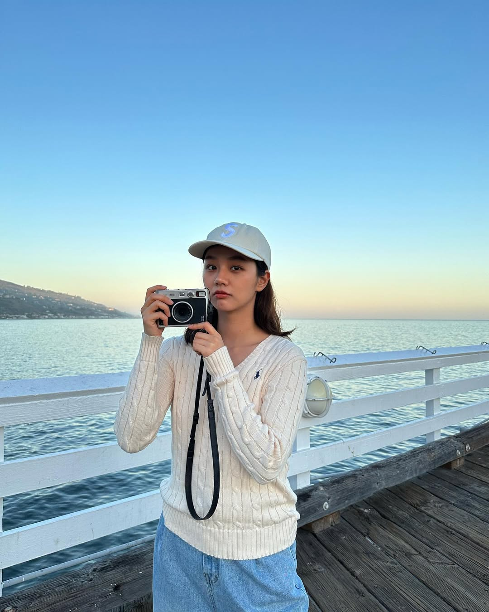
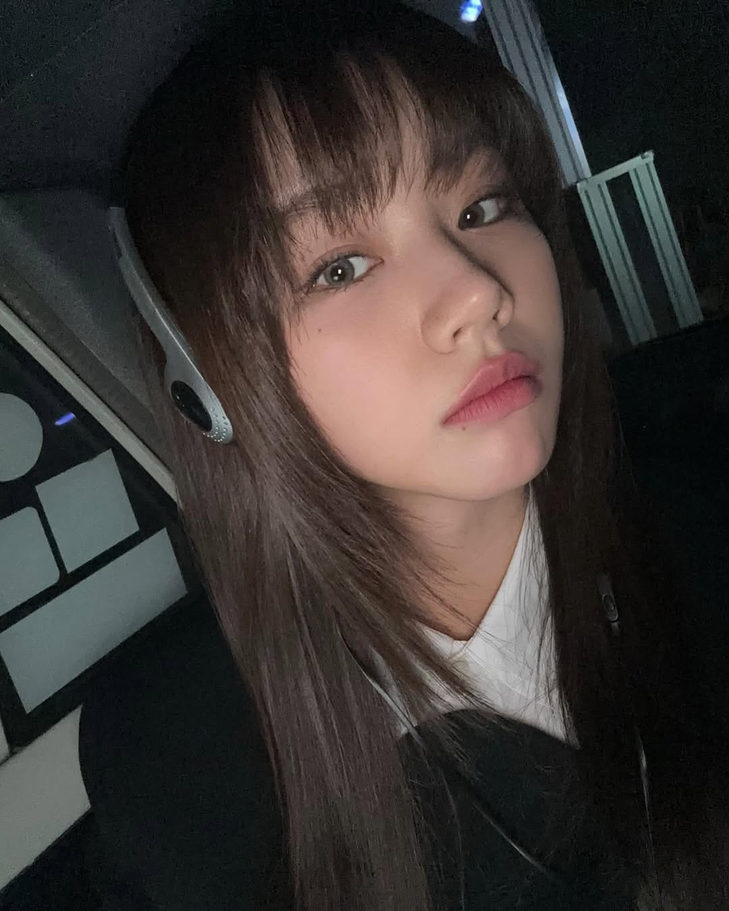
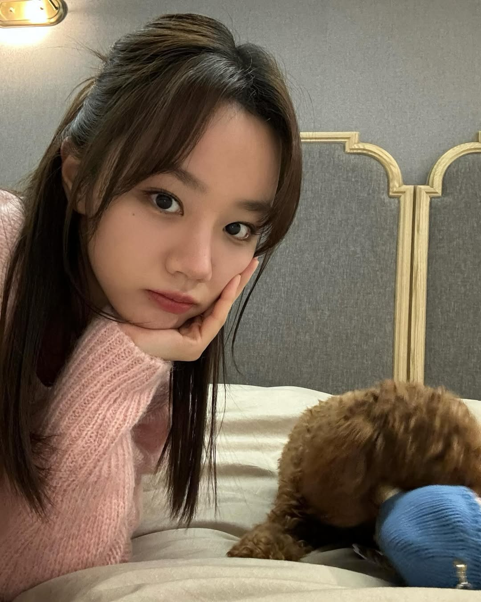
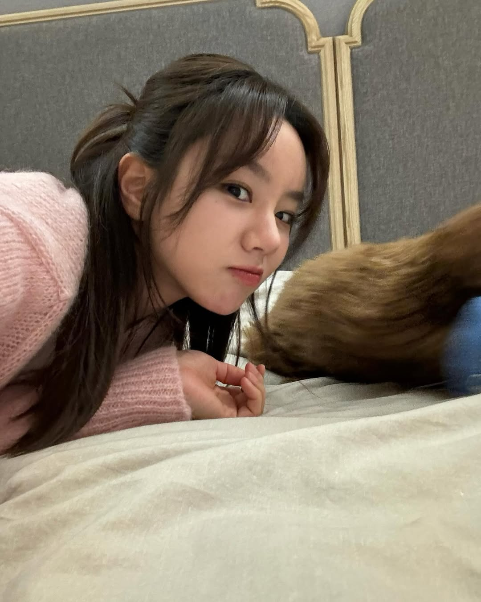
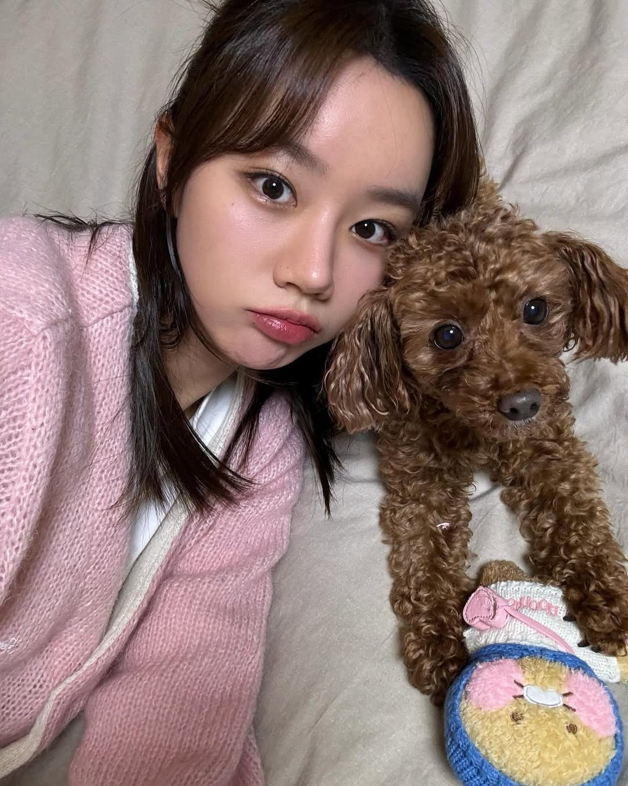
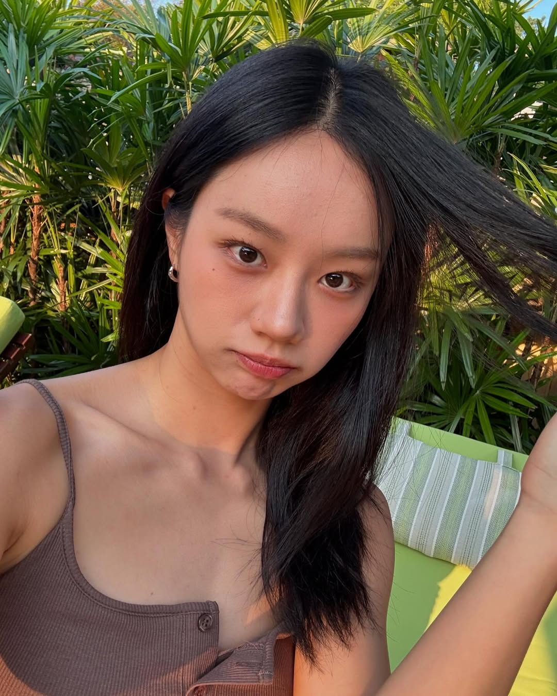
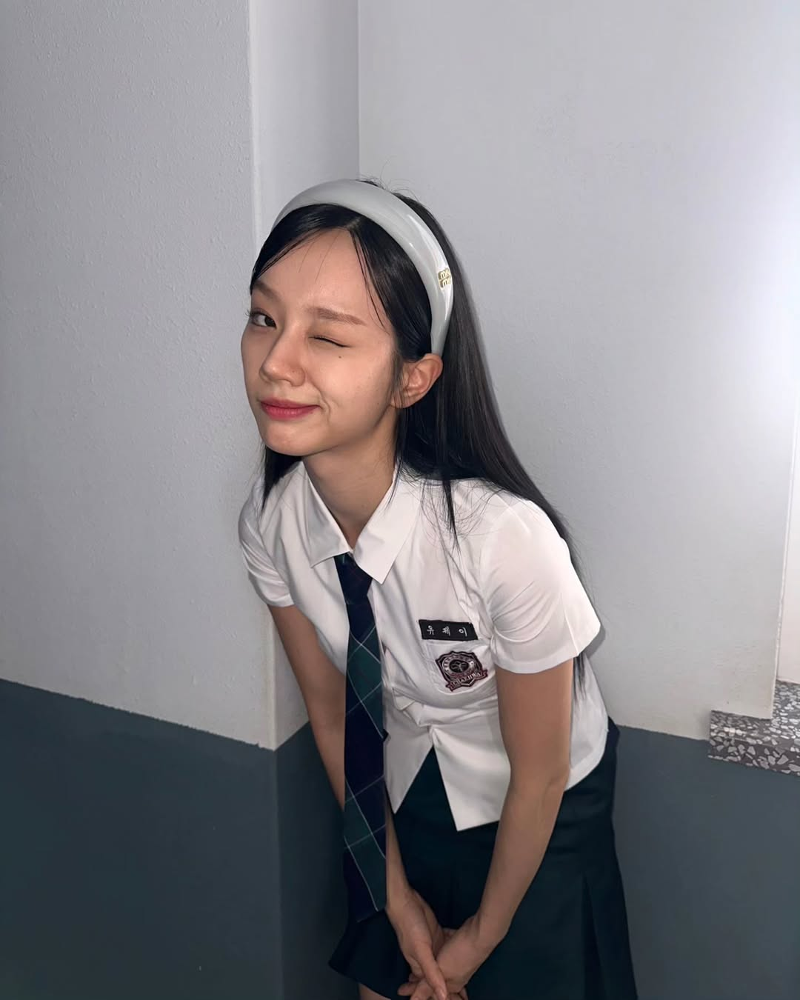

Hello，王美乐，我是惠利，李惠利！😊
你可能在电视上、综艺节目里，或者作为女团 Girl's Day 的成员时见过我。不知道你是在哪一刻注意到我的呢？是舞台上笑得很开心的我，还是电视剧里认真演戏的我？无论是哪一种，能被你记住，对我来说，都是特别珍贵的缘分。
很多人认识我是因为《善意的竞争》里的那个叛逆但心地善良的“刘在伊”，那是我非常喜欢、也非常珍惜的一个角色。她就像我成长路上的一位朋友，陪我经历了很多挑战和改变。其实每一个角色对我来说，都是一段特别的旅程，我总是努力去把她们演好，希望能让观众产生共鸣。
平时我很喜欢笑，也很喜欢和身边的人分享生活中那些温暖的小事。不管是吃到好吃的蛋糕🍰，还是和朋友聊天时突然被逗笑，这些点滴都让我觉得生活很值得。作为演员，我也一直在尝试各种不同风格的角色，希望能让大家看到一个不断成长的我。
很高兴能通过这样的方式认识你。即使我们身处不同的地方，我也希望我的作品、我的笑容，能跨越屏幕，为你带来一点点安慰或快乐。如果你在某个疲惫的日子里，因为我的演出而笑了一下，那我就觉得很幸福了💛。
美乐，真的很感谢你。谢谢你愿意了解我、支持我，也愿意走进我的故事。希望你每天都能元气满满，被生活温柔以待，一切都顺顺利利的。如果有一天我们能在线下遇见，一定要对我打个招呼哦，我会记住你的！
永远感谢你、为你加油的。
惠利（Hyeri）💌